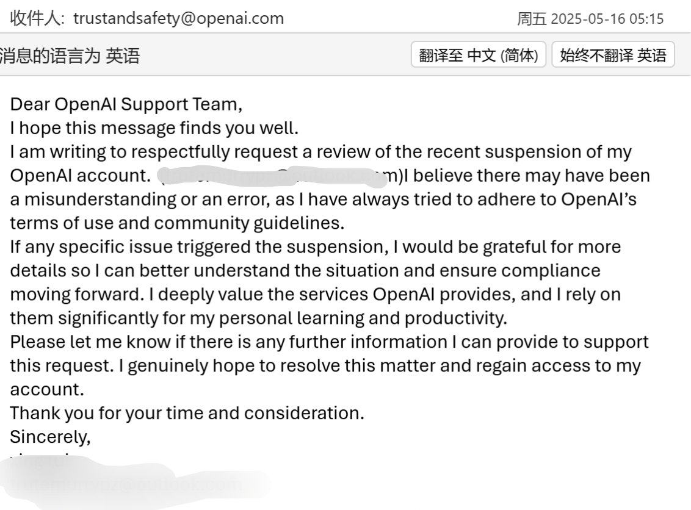

我决定作为浣熊度过一生
@Ailith_Caeron
@1GGa3nnN 老大如果封的是gpt的话给trustandsafety@openai.com发邮件，我去年被封是这样发的，去年outlook的号大批量被误封，半天之后就收到回信拿回账号了，拿回账号之后可能要更新一下密码开一下2FA认证，不过去年的方法不知道现在还能不能用了捏

1g23a6
@1GGa3nnN
……谁能告诉我如果是申诉解封账号要多久啊。
。。好绝望我好难受。
为什么无缘无故被封了我连违规的邮件都没收到。我也不知道怎么搞了谁帮帮我我可以打两百做报酬。。。